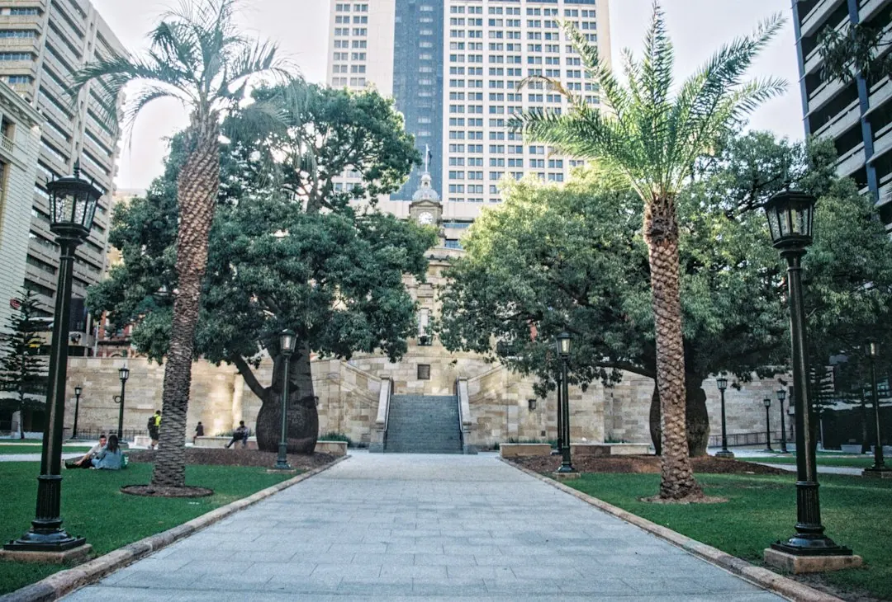

Installed concrete sleeper walls in Brisbane are published at around $300 per square metre for a simple, accessible low wall, rising to $1,000 or more for taller, engineered or difficult to access work. A wall no more than 1 metre high, with no surcharge load and at least 1.5 metres from a building or another retaining wall, generally needs no building approval. More complex walls usually need approval and RPEQ design or certification.
For homeowners comparing concrete sleeper retaining walls brisbane options, the practical decision comes down to wall height, soil loading, drainage, access, approvals and the detail included in the quote.
Concrete Sleeper Retaining Walls Brisbane Explained
The information published by Brisbane Sleeper Wall Installers treats a retaining wall as structural work, including a wall used for a garden bed or levelled lawn. Height is only one part of the assessment. Soil held behind the wall, nearby vehicles or structures, drainage, and the distance from buildings or other walls can change the approval and engineering requirements.
A low wall generally falls within the stated conditions when the wall and retained soil are no more than 1 metre high, there is no surcharge load, and it is at least 1.5 metres from a building or another retaining wall. A sloping block, narrow side path or nearby structure can make the site more involved.
- Measure the approximate wall length and height.
- Note driveways, buildings, fences or other structures close behind it.
- Record slopes, restricted access and existing drainage.
For a broader comparison of local trades, see Brisbane retaining wall installers.
Choose sleepers and posts for the site
A sleeper wall stacks steel reinforced concrete sleepers between galvanised steel posts. Common sleepers are 2.0 or 2.4 metres long, 200 millimetres high and about 75 to 80 millimetres thick. Many manufacturers quote a design life of around 50 years. Post size and hole depth should come from the manufacturer's design tables or an engineer.
Concrete does not rot and is not eaten by termites, which can make it a practical replacement for an old timber sleeper wall. The trade off is a higher upfront cost than treated pine. Sleeper weight, excavation, post installation and access should be considered before the work is priced.
Plan drainage and any fence above
Drainage should be identified in the quote, not left as an assumption. The published construction description uses slotted agricultural pipe at the base, free draining gravel backfill and geotextile fabric. Water should go to a lawful point of discharge, not onto a neighbour's land. Ask where the outlet goes and whether excavation, disposal and reinstatement are included.
A fence on top creates a combined height question. In Brisbane, the fence and retaining wall heights count together, and a combined height over 2 metres above natural ground needs building approval. Confirm the finished levels before ordering sleepers or a Colorbond fence.
Before post holes or drainage trenches are dug, a Before You Dig Australia enquiry can identify underground electricity, gas, water and telecommunications assets. Ask how those services affect the proposed layout.
Use the quote to compare scope
Published Brisbane price guides put installed walls from around $300 per square metre of wall face for a simple, accessible low wall, rising to $1,000 or more per square metre for taller, engineered or difficult to access work. These figures are indicative. Height, access, excavation, drainage, engineering and approvals can change the total.
An itemised quote should identify:
- removal of an existing timber wall, if required;
- excavation, spoil removal and access arrangements;
- sleepers, galvanised posts and concrete installation;
- drainage pipe, gravel, geotextile fabric and discharge;
- engineering, approval or certification costs;
- fencing, landscaping and reinstatement, if included.
Ask which assumptions may change after inspection. Unexpected excavation conditions, a narrow path or deeper post holes can affect scope. Final post depth should follow design tables or an engineer's direction.
Confirm approval and responsibility
Walls outside the low wall conditions generally need building approval and usually a site specific design. The published Queensland guidance says required design or certification must come from a Registered Professional Engineer of Queensland, or someone under that engineer's direct supervision. Ask which documents will be supplied before construction starts.
Queensland licensing rules set out who can perform work once a job is valued over $3,300. Ask how that rule applies to the quoted scope and whether any relevant insurance or warranty documentation is included.
Before accepting a quote, establish who is responsible for service locating, approvals, drainage discharge and inspection of the completed wall. Those answers are more useful than comparing a square metre price alone.
- Measure the site. Record approximate length, height, slope, access restrictions and nearby buildings or walls.
- Check the conditions. Discuss height, surcharge loading, setbacks, drainage and any fence before work is designed.
- Confirm the design path. Ask whether approval and RPEQ design or certification are required.
- Compare itemised quotes. Check excavation, drainage, engineering, disposal, fencing and reinstatement rather than price alone.
- Locate underground services. Complete a Before You Dig Australia enquiry before post holes or drainage trenches are excavated.
| Wall situation | Planning focus | Question to ask |
|---|---|---|
| Low garden or terrace wall | Height, surcharge and setback conditions | Does the site fit the stated 1 metre and 1.5 metre limits? |
| Taller, loaded or constrained wall | Engineering, approval, drainage and access | Which design, certification and excavation items are included? |
| Wall with fence above | Combined finished height | Does the wall and fence together exceed 2 metres above natural ground? |
Common questions
How much do concrete sleeper retaining walls cost in Brisbane? Published guides put simple, accessible low walls from around $300 per square metre of wall face. Taller, engineered or difficult to access work can reach $1,000 or more per square metre. The final quote depends on height, access, excavation, drainage, engineering and approvals.
When does a retaining wall generally need building approval? A wall no more than 1 metre high, with no surcharge load and at least 1.5 metres from a building or another retaining wall, generally needs no building approval. Walls outside those conditions usually need approval and a site specific design.
Does a fence count toward retaining wall height? Yes. In Brisbane, the fence and retaining wall heights count together. A combined height over 2 metres above natural ground needs building approval.
What drainage should be included in the quote? Ask whether the quote includes slotted agricultural pipe, free draining gravel backfill, geotextile fabric and a lawful point of discharge. Water should not be directed onto a neighbour's land.
Who should certify a more complex wall? Required design or certification should come from a Registered Professional Engineer of Queensland, or someone under that engineer's direct supervision.
This guide covers sleeper wall options, cost signals, drainage, fencing, approval questions and quote checks for Brisbane properties.